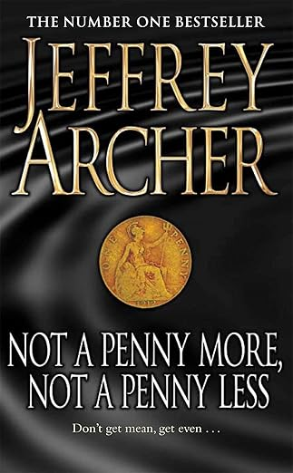

English
We have done multiple different topics in English so far, including grammar, vocabulary, book circles, ethics and reading exercises. I have enjoyed all of the topics relatively well, but the most entertaining topic would have to be the book circles for sure. For some reason those books always seem to stick with me and are very entertaining to read.
Currently we are reading a variety of different books but personally I am reading one with the title "Not a Penny More, Not a Penny Less". It follows the journey of how four young men get swindeled out of a total of $1 million dollars by one Harvey Metcalfe, a self proclaimed master at avoiding the law and playing the game that is life. They wont give up without a fight though and soon their plans to steal from the master are set into motion. The book has a entertaining story and I love reading about each of their different plans.
